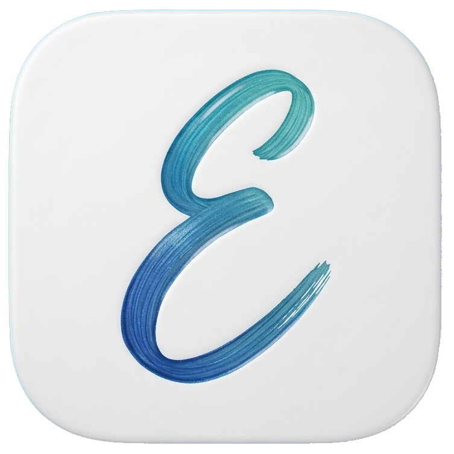

Erduo.ai
耳朵 · ears
A listening ear for the days worth remembering.
Erduo stays quiet in the background, notices the conversations that matter, and pairs them with the photos you took.
Stay in the room.
Erduo writes the recap, drafts the follow-up, and proposes the invite.
-
Ambient, never eager
No record button, no note-taking, no meeting to start. Erduo simply listens for the things you would have wanted to write down.
-
Matched to your album
The dialogue worth keeping gets paired with the pictures you took beside it, so a recap looks like the moment actually felt.
-
Already drafted
A recap ready to post, a follow-up email in your own voice, a calendar invite with the time you both said out loud.
You decide when the ears are open: by hour, by place, or not at all.
Every recap is yours to keep, edit, or let go.